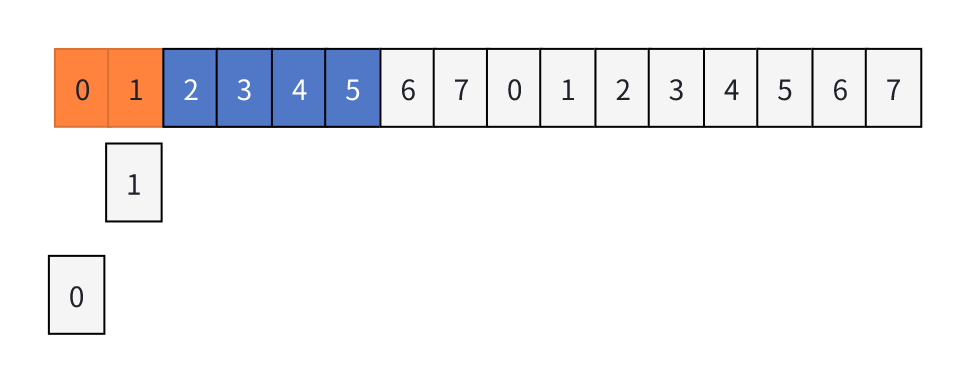
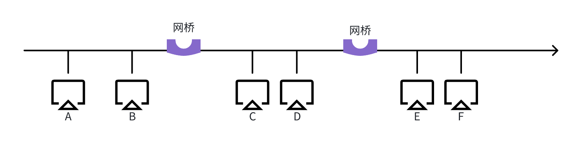

数据链路层
一、概述
节点：计算机网络中的主机、路由器都可以叫做节点。
链路：指的就是网络中的两个节点之间的物理通道，链路用的传输介质主要有双绞线光纤和微波。分为有线链路和无线链路。
数据链路：指的是网络中两个节点之间的逻辑通道，把实现控制数据传输协议的硬件和软件加到链路上构成了数据链路。
帧：链路层的协议数据电源，封装了网络层数据报。
链路与数据链路之间的区别：链路是物理通道、数据链路是逻辑通道；数据链路层主要负责通过一条链路从一个节点向另一个由物理链路直接相连的相邻的节点，传送数据报。
数据链路层功能：在物理层提供服务的基础上项网络层提供服务，最基本的服务就是将网络层的数据可靠的传输到相邻节点的目标网络层。
数据链路层作用：是加强物理层传输原始比特流的功能，将物理层提供的可能出错的物理链接改造成逻辑上无差错得数据链路，使之对网络层表现为一条无差错得链路。
举例子说明，网络层是大老板、数据链路层就是秘书、物理层是跑腿的，现在老板A要送文件给老板B，老板A让秘书发文件，秘书把文件分成五段并标号，然后让跑腿的送文件，老板B的秘书一看文件不对，只有三段，就得改正文件，保证让老板B拿到的使正确的文件。
数据链路层为网络层提供的服务：
-> 无确认无连接的服务：适用于误码率低的通信，接收端的信息不用发出响应。如果物理层并没有成功传送数据，数据链路层不回做出任何的响应fa'song。
-> 有确认无连接的服务：收发双方无需建立链接，但数据成功发送到的话，接收端要发送响应。
-> 有确认面向连接服务：收发双方建立连接，有连接必须有确认，所以不存在无确认有连接的服务。
链路管理：即连接的建立、维持、释放（用于面向连接的服务）。
流量控制：接收端收不过来的话，就需要让发送方慢点儿，就叫流量控制。
差错控制：帧错/位错。
二、组装成帧和透明传输
封装成帧
封装成帧就是在一段数据的前后部分添加首部和尾部来构成一个帧，接收端收到比特流之后，根据首部和尾部的标记来判断帧的开始和结束，标记的主要作用就是界定帧。
帧同步：接收方应当能从接收的二进制比特流中区分出帧的开始和终止。
帧长：如下图所示。
MTU：最大传输单元，帧的数据部分必须小于等于MTU。
帧的组成方法：
-> 字符计数法。
-> 字符（节）填充法。
-> 零比特填充法。
-> 违规编码法。
透明传输
透明传输是指不管所传的数据是什么样的比特流，都应当能够在链路上传送，因此数据链路层不需要关系传输的数据比特流的内容。
当传送的数据中的比特流的组合敲墙与某一个控制信息完全一样时，就必须采取适当的措施，使接收方不回将这样的数据误认为是控制信息，这样才能保证书数据链路层传输是透明的。
帧的组成方法
字符计数法
帧首部用一个计数字段（第一个字节，8位），来表明帧内的元素。
缺点是如果第一个字符发生了失真变成了4，那么后面所有的数据就全部乱套，这种方法不常用。
字符填充法
当传送的帧是由文本组成的时候（文本文件的字符都是从键盘上输入的， 都是ASCII码）。不管输入什么字符都可以放到帧中进行传输。
当传送的帧是由非ASCII码的文本文件组成的时，就美版进行透明传输，比如二进制代码的程序或图像。
字符填充具体实现方法是这样的，有三种字节，开始字节、结束字节、转义字节。如果传送的数据正好是这三种字节，就需要再他们前面插入一个转义字节，如下图所示：
零比特传输法
比如上边的例子中，将标志字段01111110同事代表开始结束，并且严格遵守5110，即每出现5个连续的1，就在后面插入1个0，那就就会变成011111010，就不回跟标志字段混淆，并进行透明传输。
违规编码方法
用违法的编码方式来表示起始和技术，比如曼彻斯特编码中只能有低-高、高-低两种编码方式，那么可以用是高-高和低-低表示开始和结束。
结论
由于字节技术法中count字段的脆弱性及字符填充实现上的复杂性和不兼容性，目前较为普标使用的帧同步法是零比特填充和违规编码方法。
三、差错控制即检错编码
差错形成的原因
主要是由噪声产生的，差错在分类上可以根据成因分为两种、根据形式分为两种。
成因分：
-> 全局性分：由于线路本身电气特性所产生的随机噪声（热噪声），信道是固定的，随机是存在的。解决方法是提高信噪比，减少干扰。
-> 局部性：由于外界特定的短暂远近所造成的冲击噪声，就会产生差错，解决方法是利用编码计数来解决。
按形式分：
-> 位错：1变成0、0变成1。
-> 帧错：比如[#1]-[#2]-[#3]发生帧错。
丢失：收到的是[#1]-[#2]
重复：收到的是[#1]-[#1]-[#2]-[#3]
失序：收到的使[#3]-[#1]-[#2]
数据链路层的差错控制
位错差错控制方式
假设主机A和主机B进行通信，信道上有20个路由器等链路层设备。在数据的第5个路由器上发生了位错，第5个路由器就不回发位错的数据，然后往回发，54321往回收到主机A上高速主机A数据包错了让它重新发。
这比直接让错位发到主机B上然后发现错误之后等一轮要节省不少资源。
位错差错控制的编码方式
纠错编码：海明码。
检错编码：奇偶校验、循环冗余码。
物理层的编码和数据链路层的编码的不同点
数据链路层编码和物理层的数据编码与调制不同，物理层编码针对的使单个比特，解决传输过程中比特同步等问题，如曼彻斯特编码。而数据链路层的编码针对的使一组比特，通过同于码的技术实现一组二进制比特串在传输过程中是否出现了差错。
冗余编码
在数据发送之前，会先按照某种关系加上一段冗余位，构成一个符合某一规则的码字后再发送，当要发送的数据有变化时，对应的冗余码也会发生变化，使码字遵从不变的规则，接收端根据收到的码字是否扔符合原规则从而判断是否出错。
检错编码-奇偶校验码
奇偶校验是分为一位校验码和n-1位信息元。其编码方式分为奇校验和偶校验，奇校验就是在数据前面加1或0使1的个数为奇数，偶校验是在数据前面加1或0使1的个数是偶数。
对于奇偶校验智能检测奇数个数（1位错、3位错）的比特错误，因而检测能力只有50%。
例子：如果一个字符S的ASCII码从低到高时11000101，采用奇校验，在下边收到传输后字符中，哪种错误不能校验？
A、11000011 B、11001010 C、11001100 D、11010011
答案是D，显而易见，S的正确奇校验码是11100101，四个答案中都是错误的编码，但是错误的编码也有可能不会被找到，ABC三项中，1的个数均为4个偶数，奇校验必须满足1的个数为奇校验，那么ABC错误必然能被检测出来，但是D中的1的个数是5个，是奇数，不能检测出来。
检错编码-CRC循环冗余码
编程思想是，比如发送发送数据是5，生成多项式是2，然后5%2=1，那么1就是冗余码/FCS帧检测序列，5+1=6，所以发送端发送的使6，接收端一看是6，是2的倍数，就没问题了。
例子：假如我们要发的数据是1101011011，采用CRC检验，生成多项式是10011。
10011表达多项式应该是x4+ x + 1阶数时4，那么就先用原始数据1101011011 * 24得到11010110110000，然后用这个11010110110000除以10011得到余数是1110，也就是FCS就是1110，然后用11010110110000得到11010110111110就是要发送的数据。具体二进制除法用到异或运算，如下图所示：
然后对于接收端来说，如果对11010110111110进行检错呢？
直接判断11010110111110是不是生成多项式10011的倍数。
另外FCS的生成以及接收端CRC检验都是由硬件实现的，处理迅速，不会延误数据的传输。
结论：在数据链路层仅仅使用循环冗余检验CRC差错检测奇数，只能做到对帧的无差错接收，即“凡是接收端数据链路层接受的帧，我们都能以非常接近于1的概率认为这些帧在传输过程中没有产生差错”。接收端丢弃的帧虽然曾收到了，但是最终还是因为有差错被丢弃。“凡是接收端数据链路层接收的帧均无差错”。
这种传输方式仍然不能称为“可靠传输”，可靠传输是发送端数据链路层发什么，接收端数据链路层就收到什么。CRC检验虽然能实现务必特差错得传输，但还是不能可靠传输。
海明码
海明码特点，可以返现双比特错，纠正单比特错。动一发而牵全身。
海明码的工作原理：
确定校验码位数
海明码不等式：
2r>= k + r + 1
r代表的使冗余信息位，k位信息位。
海明不等式的应用：
假如要发送的数据的D = 101101，数据的位数k=6，满足不等式最小r位4，也就是说D=101101的海明码应该有6+4=10位，其中原数据6位，校验码4位。
确定校验码和数据的位置
对于原始数据D=101101，已知有四位校验码，设他们分别为P1，P2，P3，P4；数据从左到右为D1，D2，D3，D4，D5，D6。
校验码Pn只能放在第2n, n∈N位上，将校验码填充好后，再按顺序把原始数据填好，填满这十位。
| 数据位 | 1 | 2 | 3 | 4 | 5 | 6 | 7 | 8 | 9 | 10 |
|---|---|---|---|---|---|---|---|---|---|---|
| 代码 | P1 | P2 | D1 | P3 | D2 | D3 | D4 | P4 | D5 | D6 |
| 实际值 | ? | ? | 1 | ? | 0 | 1 | 1 | ? | 0 | 1 |
求出校验码的值
我们上一步已经得到了数据D=101101中相关的数据位置，如下图所示：
| 数据位 | 1 | 2 | 3 | 4 | 5 | 6 | 7 | 8 | 9 | 10 |
|---|---|---|---|---|---|---|---|---|---|---|
| 二进制 | 0001 | 0010 | 0011 | 0100 | 0101 | 0110 | 0111 | 1000 | 1001 | 1010 |
| 代码 | P1 | P2 | D1 | P3 | D2 | D3 | D4 | P4 | D5 | D6 |
| 实际值 | ? | ? | 1 | ? | 0 | 1 | 1 | ? | 0 | 1 |
如何计算P1 - P1所在的位数的二进制而是0001，从右往左第一位为1，而除P1外，D1，D2，D3，D4，D5的所在位数的二进制位从右往左的第二为1，那就另P1 ⊕ D1 ⊕ D2 ⊕ D4 ⊕ D5=0，即可算出P1的值为0。
如何计算P2：P2所在的数的二进制位是0010，从左往右的第二位是1，那就是找他们后面从左往右第二位也是1的，即D1，D3，D4，D6，同样的令P2 ⊕ D1 ⊕ D3 ⊕ D4 ⊕ D6=0 即可得到P2=0。
同样的方法可得到：P3 ⊕ D2 ⊕ D3 ⊕ D4=0 => P3 = 0，P4 ⊕ D5 ⊕ D6=0 => P4 = 1。
那么101101的海明码就是0010011101
上面的表完整的就是：
| 数据位 | 1 | 2 | 3 | 4 | 5 | 6 | 7 | 8 | 9 | 10 |
|---|---|---|---|---|---|---|---|---|---|---|
| 二进制 | 0001 | 0010 | 0011 | 0100 | 0101 | 0110 | 0111 | 1000 | 1001 | 1010 |
| 代码 | P1 | P2 | D1 | P3 | D2 | D3 | D4 | P4 | D5 | D6 |
| 实际值 | 0 | 0 | 1 | 0 | 0 | 1 | 1 | 1 | 0 | 1 |
检错并纠错
我们从上面几步得到原始数据D=101101对应的十位海明码是0010011101，加入第五位发生错误，导致接收端收到消息是0010111101，我们来讨论下接收端到底是如何纠错的。
| 数据位 | 1 | 2 | 3 | 4 | 5 | 6 | 7 | 8 | 9 | 10 |
|---|---|---|---|---|---|---|---|---|---|---|
| 二进制 | 0001 | 0010 | 0011 | 0100 | 0101 | 0110 | 0111 | 1000 | 1001 | 1010 |
| 代码 | P1 | P2 | D1 | P3 | D2 | D3 | D4 | P4 | D5 | D6 |
| 实际值 | 0 | 0 | 1 | 0 | 0 | 1 | 1 | 1 | 0 | 1 |
| 错误值 | 0 | 0 | 1 | 0 | 1 | 1 | 1 | 1 | 0 | 1 |
首先我们根据海明公式可以判断出来第1，2，4，8四位是校验码，然后我们开始计算。
P1 ⊕ D1 ⊕ D2 ⊕ D4 ⊕ D5 = 1 ······ ①
P2 ⊕ D1 ⊕ D3 ⊕ D4 ⊕ D6 = 0 ······ ②
P3 ⊕ D2 ⊕ D3 ⊕ D4 = 1·············· ③
P4 ⊕ D5 ⊕ D6 = 0 ····················· ④
我们把四个式子中格式为Dn的二进制位的集合分贝设置为A1，A2，A3，A4，四个集合。发生错误的二进制位设为X。
由②④得知，对于∀二进制位位N ∈ A2 ∪ A4，N没有发生错误。
由①③得知，发生错误的二进制位X ∈ A1 ∩ A3 ，A1 ∩ A2 = { D2, D4}，而D4 ∈ A2 ∪ A4，D4不可能发生错误，所以发生错误的就是D2，也就是第五位二进制位。
那么纠正错误的海明码就应该是0010011101。
四、流量控制与可靠性传输机制
数据链路层流量控制
概念针对较高的发送速度和较低的接收速度会不匹配，会造成传输出错，流量控制就是控制发送方发送速度。
数据链路层流量控制和传输层的流量控制的区别：
-> 数据链路层的流量控制是点对点的，针对传输层来说流量控制是端到端的。
-> 数据链路层流量控制手段：接收方接收补下就不回复确认；传输层流量控制的手段：接收端给发送端一个窗口公告。
流量控制方法
停止-等待协议
没发送完一个帧就停止发送，等待对方确认，在收到确认后再发送下一个帧。
因为存在等待过程，所以这个协议是比较低效的，一般不使用。
滑动窗口协议
如上图所示，上面是发送端，下面是接收端，发送端发送窗口有N帧长，接收端接收窗口N帧长，接收端每接受一帧，接收窗口就往前一位，然后向发送端发送确认信息，接收端收到后，接收窗口也会往前一位。
停止-等待协议收到一个确认就想相当于是两个滑动窗口都只有一帧的滑动窗口协议。
三种协议的区别
停止-等待协议：发送窗口为1，接收窗口为1。
后退N帧协议（GBN）：发送窗口大于1，接收窗口为1。
选择重传协议（SR）：发送窗口大于1，接受窗口大于1。
可靠传输、滑动窗口、流量控制
可靠传输：发送端发的是啥，接收端接收的就是啥。
流量控制：控制发送速率，使接收方有足够的缓冲空间来接收每一帧。
滑动窗口解决的问题：
流量控制：加入发送端发送太快，接收端首部下酒不确认，发送端想法也发不了。
可靠传输：发送之后长时间没有收到确认，就会重复发送数据。
五、等待协议
停止等待协议
停止-等待协议归属
过去技术不成熟，传输可能会出现各种问题，传输层和数据链路层都要进行流量控制，现在技术成熟了，出错的概率比较小，只需要在传输层保留流量控制就行，数据链路层只需要进行差错控制。
停止等待协议的内核
为什么要停止等待协议？
除了比特出差错，底层通信还会出现丢包（设备故障、病毒攻击、路由错误等）问题，为了实现流量控制。
停止等待协议的前提是什么？
虽然最常用的是全双工通信方式，方便理解简化一下模型采用单工的模式介绍，一方只负责发送一方只负责接收数据。因为是在讨论可靠性的传输原理，所以不用考虑数据在哪一层次上传输的。
“停止-等待”就是每发送完一个分组就停止发送，等待方确认，在收到确认后再发送一个分组。
停止等待协议应用情况：
有差错情况。
无差错情况。
停止等待协议无差错情况
发送方的0帧成功发给了接收方。
然后发送方发送了一个确认帧ACK0（acknowledge）。
发送方接收到了确认帧ACK0，继续发送1帧。
然后1帧顺利到达接收方，接收方又给发送方发送确认帧ACK1，如果往返数次，最后数据就能传送完毕。
如下图所示：
停止等待协议有差错情况
丢包情况
在发送过程中出现了数据错误，丢包情况：
接收端没有接收到数据，所以发送端就无法收到确认帧。那么该如何处理？在发送端发送某个帧的时候就会启动一个计时器，要在一定时间内接受到接收端来发送的确认帧，如果超时之后会重新将帧重复发送。
超时计时器的时间设置应当比帧传输的平均RT更长，否则就会正常发送也会超时。
注意：
发送完一个帧，一定要保存副本，不然东西发出去之后，半路没有了，丢包了，需要重发的时候无法找到副本进行重发。
数据帧和确认帧都必须要编号。
对于帧出错的问题，接收方就会把出错的帧给解决掉。不会回复确认帧就会重新发新的帧。
确认帧ACK丢失
这种情况下超时计时器时间到了之后，确认帧还是没有传回来发送方会重新发送数据，接收方已经给确认过这个帧，所以就 把之前的接收的丢弃重新接收。
ACK迟到
确认帧吃吃不到，发送方超时重试，接收方收到重试帧之后再次发送确认帧，发送方还是未收到确认帧，过一段时间之后发送才收到确认帧这个时候回直接将它丢弃。
停止等待协议的性能分析
优点：操作简单。
缺点：信道利用率比较低。
TD为发送帧的时候发送延迟，RTT为往返时延，TA为确认帧发送时延。
信道利用率：U =
信道利用率其实就是发送方在一个发送周期内，有效的发送数据所需要的时间占整个发送周期的比率。
信道利用率 =
信道吞吐率 = 信道利用率 * 发送方发送速率
问题：一个信道的数据传输率是4kb/s，单向传播时延是30ms，如果使用停止-等待协议的信道最大利用率达到80%，要求数据帧的长度最少位多少？
回答：没有说明确认帧的发送时延，可以忽略不计，单向传播要30ms，那么双向传播的时延是60ms，也就是说RTT = 60ms。信道利用率为80% 我们假设信道的长度为L，那么：
U =
= = = 80% L = 960 bite
后退N协议GBN
流水线技术
停止等待协议的弊端是信道利用率太低，要想克服这种弊端，可以尝试多个帧同时发送，同时等待确认帧ACK，这种技术叫做流水线技术。有点类似于多线程。
流水线技术对停止等待协议的弊端的改进方式：
1、必须增加序号范围：这一组同时发送的帧里面，哪个要几号要搞清楚，不然接收方给的确认帧也不好确认到底给哪个。
2、发送方需要缓存多个分组：容易出现丢帧的情况，所以要多弄几个缓存，停止等待协议一次一帧只需要一个帧的缓存，这种方式一次传几帧，就要多大的缓存空间。
后退N帧协议滑动窗口
滑动窗口分为发送窗口和接收窗口。
发送窗口：发送方维持一组连续的允许发送方的帧的序号。

接收窗口：接收方维持一组连续的允许接收帧的序号。
GBN协议接收窗口为1，SR协议接收窗口大于1，停止等待协议为1。
具体执行步骤：
模拟下GBN的发送过程，首先发送窗口中0号帧和1号帧先先后发送出去。橙色代表副本，如果帧丢失，需要进行超时重试，就传橙色副本。

然后0号帧被接受到了，并且接收方发送了确认帧ACK0，但1号帧还在路上。
接收方发完确认帧后，接收窗口就完后滑一格。
然后1号帧到了后，接收窗口又往后滑一格，发送单收到确认帧后又往后滑，这样子一直滑，一直到所有帧都被传完为止。
模块说明：
GBN发送方必须响应的三件事
上层的调用
上层要发送数据时，发送方先检查发送窗口是否已满，如果未满，则产生一个帧并将其发送，如果窗口已满，发送方只需要将数据返回给上层，暗示上层窗口已满，上层等一会在发送。
收到一个ACK
GBN协议中，对n号帧的确认采用累计确认的方式，标明接收方已经收到n号帧和他之前的全部帧。
超时事件
协议的名字位后退N帧/回退N帧，来源于出现丢失和时延过长帧时发送方的行为。就项在停止等待协议中一样，定时器将再次用于回复数据帧或确认帧的丢失。如果出现超时，发送方重传所有已发送但未被确认的帧。
比如发送方发送0号帧，接收方确认了，且返回了确认帧ACK0，但是发送方1号帧的时候丢包了，然后又发2号帧，接收方想要得到1号帧，所有二号帧到手里直接丢弃，并不会返回ACK2，然后发送方继续发3 4 5号帧，接收方全部丢弃，这个时候长时间没有收到确认帧，超时计时器时间到了，就会启动重传机制。从1号帧开始全部重新传一遍。
GBN接收方要做的事
返回确认帧
如果正确收到n号帧，并且按顺序那么接收方位n帧发送一个ack，并将该帧中的数据部分交付给上层。
丢弃错误帧
如果不满足返回确认帧的条件，那么就丢弃掉针，并为最近按序接收的帧重新发送ACK，接收方无需缓存任何时序帧，只需要维护一个信息：expectedsqnum。
先收到0再1，然后4 5接收方说，收不到4那么4和5就要丢弃了，然后发送方返回ACK2，让发送方变更。
GBN过程图解
滑动窗口长度
窗口长度可以无限长吗 ？ 肯定不能，如果用n个比特对帧进行编号，那么发送窗口的尺寸是WT应满足1<=WT<=2n - 1。因为发送尺寸过大，会是的接收方无法区分新帧旧帧。
比如帧编号0 1 2 3算是两个比特，那就应该满足1<=WT<=3，我们实时反例，让WT = 4，然后0，1，2，3同时发送，确认帧全部丢失，就会触发超时计时器，发送方重传0，1，2，3号帧，接收方不知道是第一轮还是第二轮。
GBN协议总结
积累确认（偶尔捎带确认）。
接收方只按顺序接收帧，不按顺序丢帧。
确认序号最大的，按序到达帧。
发送窗口最大为2n - 1，接收窗口为1。
GBN性能分析
优点：因为连续发送提高了信道利用率。
缺点：在重传时，必须把原来已经正确发送的数据帧重传，使传送效率降低。
选择重传协议（SR）继承了后退N帧协议（GBN）的优点，并优化了缺点。
选择重传协议SR
GBN协议的弊端
累积确认导致的批量重传，例如0，1帧正常传送并确认，然后3帧丢失，4 5 6正确拆书，结果接收方浪费资源，把这几个扔掉，当超时计数器到时候，超时重试3 4 5 6全部重传，就造成el资源浪费。
解决方法是设置单个确认，同时加大接收窗口，设置接收缓存，缓存乱序到达的帧。
选择重传协议中的滑动窗口

SR发送方必须响应的三件事
上层大的调用：从上层收到数据后，SR发送方检查下一个可用于该帧的序号，如果序号位于发送窗口内，则发送数据帧，否则就像GBN一样，将数据缓存或者将数据返回上层之后再传输。
接收到一个ACK：如果收到ACK，加入该帧序号在窗口内，则SR发送方将那个被确认的帧标记位已接收，如果该帧序号是窗口的下界，（最左边第一个窗口对应的序号），则窗口向前移动到具有最小序号的未确认帧出，如果窗口移动了并且有序号在窗口内的未发送帧，则发送这些帧。
如上图所示，0 1已发送确认，且不在窗口内，2 4发送但未确认，3 发送确认，5在窗口内但为发送。大于5的不在窗口内就不能发送，那么当发送方收到确认帧后，发送窗口就会滑动2为，下界就变成了4号帧。
超时事件：每个帧都有自己的计时器，一个超时时间发生后只重传一个帧。
SR接收方要做的事情
来着不拒（窗口内的帧）：SR接收方将确认一个正确接收的帧二不管是否按照顺序，失序的帧将被缓存，并返回给发送方一个该帧的确认帧【收谁确认谁】，直到所有帧都被确认为止，这时才可以将一批帧按序交付给上层，然后向前移动滑动窗口。
如果收到一个窗口外的，小于窗口下界的帧，就返回一个ACK。
运行中的SR
滑动窗口
SR协议窗口可以无限长？ 肯定不能，如下图所示，接收方无法确认传来的是新帧还是重传的旧帧。
发送窗口最好等于接收窗口，太大会溢出，太小没啥意义。
设WTmax是发送窗口大小，WRmax是接收窗口大小，n表示用几个比特来对帧编号，则对滑动窗口长度的限制是WTmax = WRmax = 2(n-1)。
SR协议重点
对数据帧逐一确认，收一个确认一个。
只重传出错的帧。
接收方出错的帧。
WTmax = WRmax = 2(n-1)。
信道划分介质访问控制
数据传输使用的链路
点对点链路：
概念：两个相邻节点通过一个链路相连，没有第三者。
应用：PPP协议，常用于广域网。
广播式链路：
概念：所有主机共享通信介质。
应用：早期的总线以太网、无限局域网，常用于局域网。
拓扑结构：总线型、星型。
介质访问控制
概念：介质访问控制就是采用一定的措施，使得两对节点之间的通信不会发生互相干扰的情况。
分类：
静态划分信道：
信道划分介质访问控制
频分多路复用FDM（Frequence）。
时分多路复用TDM（Time）。
波分多路复用WDM（Vave）。
码分多路复用CDM（Code）。
动态划分信道：
令牌传递协议。
随机访问介质控制：
ALOHA协议。
CSMA协议。
CSMA/CD协议。
CSMA/CA协议。
信道划分介质访问控制
概念：信道划分介质访问控制，将使用介质的每个设备与来自同一信道上的其他设备的通信隔离开，把时域和频域资源合理的分配给网络上的设备。
多路复用技术：把多个信号组合在一条物理信道上进行传输，使得多个计算机或中断设备共享信道资源，提高信道利用率。
把一条广播信达，逻辑上分成几条用于两个节点之间的通信互不干扰的子信道，实际上就是把广播信道转换为点对点信道。
频分多路复用FDM
用户在分配到一定的频带之后，在通信过程中自始至终都占用这个频带，频分复用的所有用户在同样的时间占用不同的带宽（频率带宽）资源。
也就是说每个主机发出的信号频率不一样。
FDM充分利用传输介质贷款，系统效率较高；用于技术比较成熟，实现也比较容易。
时分多路复用TDM

将时间划分为一段段等长的时分复用帧（TDM帧）。每一个时分复用的用户在每一个TDM帧中占用固定序号的时隙，所有用户轮流占用信道。
TDM帧就类似于操作系统中的时间片。
注意TDM帧不是链路层的帧，是在物理层传送的比特轮流所划分的帧，标志一个周期。
频分复用类似于操作系统中的并行，时分复用类似于操作系统中的并发。
改进的时分复用-统计时分复用STDM
改进的原因：比如一个TDM帧里面为四个主机ABCD划分时间，但ABC都没有任务，空闲状态，而D处于工作，说明ABC不用于工作，却占用了时间，造成了资源浪费，因此需要进行改进。
改进的内容：
每一个STDM中的时隙数小于链接在集中器上的用户数。各用户有了数据就随机发往集中器的输入缓存，然后几种器按顺序依次扫描输入缓存，把缓存中的输入数据放入到STDM帧中，一个STDM帧满了就发出。STDM帧不是固定分配时隙，而是按需分配动态分配时隙。
假如说四个主机一同工作，信道最高速率是8000b/s，对于TDM而言，主机最高时速为2000b/s，因为四个主机分享一条信道，信道平均分配，对STDM来说一台主机最高就可以达到8000b/s，其于的不工作。
波分多路复用WDM
波分多路复用就是光的频分多路复用，在一根光纤中传输多种不同波长（频率）的光信号，由于波长（频率）不同，所以各路光信号不干扰，最后再用波长分局复用器将各路波长分解出来。
码分多路复用CDM
码分多址（CDMA）：码分多址是码分复用的一种方式。
CDM常用技术：
1个比特分为多个码元/芯片（chip），每一个站点被指定一个唯一的m位的芯片序号。
发送1时发送芯片序列，发送0时发送芯片序列反码（通常把0写成-1）。
比如，A和B都要发送信息，A发送10，B发送01，令m=8，假设A的芯片序列是 +1 -1 -1 +1 +1 +1 -1 那么A发送10就是发送（+1 -1 -1 +1 +1 +1 -1）（-1 +1 +1 -1 -1 -1 -1 +1）。假设B的芯片序号是-1 +1 +1 -1 +1 -1 +1 +1 +1 +1 ，那么B发送的01就是（+1 -1 +1 -1 +1 -1 -1 ）（-1 +1 -1 +1 -1 +1 +1 +1）
如何保证区分两台主机：当多个站点同时发送数据的时候，要求各个站点的芯片序列相互正交，就能实现正确区分没太主机。
举例子，设A的芯片序列位A = ( +1 -1 -1 +1 +1 +1 +1 -1)；B的芯片序列位 B = （-1 +1 -1 +1 -1 +1 +1 +1）
因为
所以能实现正确区分每台主机。
如何合并：各路数据在信道中被线性相加。
A 发送(+1 -1 -1 +1 +1 +1 +1 -1)(-1 +1 +1 -1 -1 -1 -1 +1)
B 发送(+1 -1 +1 -1 +1 -1 -1 -1)(-1 +1 -1 +1 -1 +1 +1 +1)
那把他们拧成一股，就发送(+2 -2 0 0 +2 0 0 -2)(-2 +2 0 0 -2 0 0 +2)
如何分离：合并的数据和源站规格化内积。
比如我们收到了一个比特-2 +2 0 0 -2 0 0 +2 ，让他咸鱼A芯片序列+1 -1 -1 +1 +1 +1 +1 -1进行规格化内积，
而-1对应的就是0，说明A发送的比特是0。
ALOHA协议
介绍
概念：广义的ALOHA协议包含纯ALOHA协议和时隙ALOHA协议，狭义的ALOHA协议指的就是纯ALOHA协议。
来历：计算机科学家norm abramson去夏威夷完，解决通信不变的问题采用了ALOHA，就是夏威夷语中的你好再见。
纯ALOHA协议：
不监听信道，不按时间槽发送，随机重发。
如果两个站点发生冲突，接收方在就回检测出差错，然后不予确认，发送方在一定时间内收不到就判断发生冲突。
然后ALOHA协议也有类似滑动窗口协议的一个叫做确认帧，如果没有冲突，接收方收到正确信息，返回确认帧，否则接收方不返回确认帧，等超市计时器到时间后超时重传，不过和滑动窗口协议不同的是，这个超时计时器的时间是随机的。
时隙ALOHA协议
时隙ALOHA协议的思想是把时间分成若干个相同的时间片，所有用户在时间片开始时刻同步接入网络信道，如果发生冲突，则必须等到下一个时间片/时隙开始时刻再发送。
比较纯ALOHA协议，时隙ALOHA协议控制了纯ALOHA的随机特性。
必须要等到指定的时间才能进行发送。如果再发生冲突，照样重传，必须在下一个时隙开始时超时重传。
ALOHA协议特性
纯ALOHA比时隙ALOHA吞吐量更低，效率更低。
纯ALOHA想发就发，时隙ALOHA只有时间片段开始时才能发。
CSMA协议
CSMA协议介绍
CSMA协议，全称载波监听多路访问协议（Carrier Sense Multiple Access）。
CS
CS载波侦听/监听Carrier Sense，指的是每一个站在发送数据之前要检测一下总线上是否要有其他计算机在发送数据。
监听的方式：当几个站同时在总线上发送数据时，总线上的信号电压摆动值将会增大（互相叠加）当一个站检测到信号电压摆动超过一定门限值时，就认为总线上至少有两个站同时在发送数据，标明产生了碰撞，即发生了冲突。
MA
多点接入Multiple Access，表示多计算机多点接入方式链接在一根总线上。
CSMA协议思想
在发送帧之前，先监听信道，如果信道空闲，就发送完整的帧；如果信道忙碌，就推迟发送。
有三种不同的协议，分别是：1-坚持CSMA、非检查CSMA、p-坚持CSMA。
1-坚持CSMA
概念：坚持指的是对于监听信道忙之后的坚持。
思想：
如果一个主机要发送信息，要么先监听信道。
空闲则直接传输，不必等待。
忙碌则一直监听，等到空闲时在传输。
如果有冲突，则等待一个随机长的时间再监听，重复上述过程。
优缺点：
优点：只要媒体空闲，站点就马上发送，避免了媒体利用率的损失。
缺点：加入有两个或两个以上的站点有数据要发送，冲突就不可避免。
非检查CSMA
概念：非检查指的是对于监听信道忙碌之后就不回继续监听。
思想：
如果一个主机要发送信息，先监听信道。
如果信道空闲就直接发送。
如果信道忙碌就等待一个随机的时间之后再进行监听。
优缺点：
优点：采用随机的重发延迟时间可以见啥冲突发生的可能性。
缺点：可能存在大家都在延迟等待过程中，使得媒体仍可能处于空闲状态，媒体使用率降低。
p-坚持CSMA
概念：p-坚持指的是对于监听信道空闲的处理。
思想：
如果一个主机要发送信息，先监听信道。
信道空闲的话就以p概率 直接传输，不必等待；概率1-p等待到下一个时间槽在传输。
信道忙碌则等待一个随机的时间之后再进行监听。
优缺点：
优点：既能非坚持算法那样减少冲突，有可以像1-坚持算法那样空闲时间的防范。
缺点：发生冲突后还要坚持把数据帧发送完，造成了浪费。
三种协议对比
| 1-检查CSMA | 非坚持CSMA | p-坚持CSMA | |
|---|---|---|---|
| 信道空闲 | 马上发 | 马上发 | p概率发 1-p概率等到下一个时隙发 |
| 信道忙碌 | 继续坚持监听 | 放弃监听，等待一个随机时间再监听 | 放弃监听，等一个随机时间再监听 |
CSMA/CD协议
CSMA/CD协议介绍
全称载波监听多点接入/彭正检测协议（carrier sense multiple access with collision detecion）。
举例说明，比如在和别人交谈时，ALOHA协议是还没有听人家说话就开始说话，CSMA协议是先听别人说话在说话；CSMA/CD就是先听再说，边听边说。
CS：载波监听/侦听，每一个栈在发送数据之前以及发送数据时都要检测一下总线上是否有其他计算机在发送数据。
MA：多点接入表示许多计算机以多点接入的方式链接在一根总线上。总线型网络。
CD：碰撞检测（冲突检测），边发送边监听，适配器边发送数据边检测信道上信号电压的笔画情况，来判断自己在发送数据时其他站是否页在发送数据。半双工网络。
即便是先听后发，也会发生冲突，因为在传播时延对载波监听是有一定影响的。
传播时延对载波监听的影响
假设现在有AB两台主机在发送信息，数据在信道上的单程端到端传播时延为t，也就是说一串数据从这头到那头需要t时间。那么假设A已经发送了数据，然后在A发送数据一段时间后B也要发送数据，但是因为A距离发送数据的时间不足t，所以B发送数据前的监听会产生错误，误以为信道空闲。
那么发生碰撞之后怎么办？两个信号相互干扰，就好像傻子变成了泥水然后两房发现自己这边收到了泥水就知道出现问题，就不回发东西。
假设A在t=0时刻发送数据，那么B发送数据必然是在一个小于t的时刻，设B在t = t - δ时刻发送数据，那么Adele数据到达B是在t=t时刻，B的数据到达是在t = 2t - δ时刻，两者发生碰撞的时刻就是 t = t -
最迟多久才能知道自己和别人发生了碰撞呢 ？ 当δ=0时，tmax = 2t - δ = 2t，也就是两倍的总线短刀端时延，也称宗鑫的端到端往返时延。也叫争用期、重提窗口、碰撞窗口。
我们还可以得到一个结论，就是经过2t时间还没有收到碰撞那么这次发送就不会发生碰撞信息。
如何确定碰撞后的重传时机
为什么不能是一次发现碰撞就重传？
如果两者都是在t=0时刻发送数据，那么就会在t=
实际上，确定重传时间用到了截断二进制规避算法。
截断二进制规避算法
确定一个基本退避（推迟）时间为征用期2t。
定义参数k，就等于重传刺水，但k不超过10次，即
从离散的整数集合{0,1,2,....,2k-1}中随机选取一个数r，重传所需要退避的时间就是r倍的基本退避时间，即2rt。
当重传次数达到16次扔不成功，说明网络太拥挤，认为此帧永远无法正确发出，抛弃此帧并向高层报告处处。
比如说站点A需要重传数据，第一次重传，k=1，r从{0,1,2,3}选；重传推迟时间为0或2t或4t或6任选一个。
如果再碰撞，r∈{0,1,2,3,4,5,6,7}。
如果第十六次碰撞，就说明网络实在太拥挤，放弃了。
如果连续多次发生冲突，就表明可能有较多的站参与征用信道，使用此算法可使重传需要推迟的平均时间虽重传次数的增大而增大，因为减小发生碰撞的概率，有利于整个系统的稳定。
举例子：以太网的二进制回退算法中，在11次碰撞之后，站点会在什么范围内选择一个随机数。
回答：这个题有点个坑点就是r∈[1,211−1] ∩ Z，但需要注意的是k=min[重传次数, 10]那么这里的k应该是10，答案应该是r∈[1,210−1]∩Z。
最小帧长问题
如果站点A要发送的帧实在太短，那么发送碰撞后也可能无法停止发送，因为发完了，而CSMA-CD协议的作用就是想让碰撞发出时立马叫停帧的发送，因为需要对帧的长度作出规定。
我们只需要保证帧的传输时延至少有两倍于信号在总线中的传播时延。
以太网规定的最短真长位64B，凡是长度小于64B的都是由于冲突而异常中止的无效帧。
CSMA-CA协议
介绍
CMSA-CA协议全称是载波监听多点接入/碰撞避免协议（carrier sense multiple access with collision avoidance）。CD智能检测出碰撞，不能避免碰撞发生，而CA可以避免碰撞发生。
既然CSMA/CD已经很棒了为啥要有CSMA/CA协议呢 ？
两者应用场景不一样，CA往往应用于无限局域网，而CD往往运用于总线式以太网。
无限通信不同于有线通信，它的范围是360。的，难以进行检测冲突，在硬件上难以实现，同样是CSMA/CD检测碰撞，有线通信只要碰准一端，无限通信需要动心南北前后左右上下检测，而且由于无限通信会出现隐蔽站的问题，难以监听碰撞。
如果说让CSMA/CA协议和别人开会，没说一句话就要等一等，没人抢话再说，然后下一句话时停止不说，没人说话再说。
工作原理
发送数据之前，先检测信道是否空闲。
空闲则发送端发出RTS（request to send）RTS包括发射端的地址、接收端的地址、下一份数据将持续发送的时间等信息，信道忙则等待。
接收端收到RTS后，将响应CTS（clear to send）。
然后如果还有别的站点发送RTS则接收端不响应，这样就解决了隐蔽站的问题。
啥是隐蔽站？ 就是A检测信道是空闲的 ，于是给B发送信息，C页检测信道是空闲的，给B发送信息，然后AC的信息就会发生碰撞。
发送方收到CTS后开始发送数据帧，同时预约信道（发送方告知其他站点自己要传多久数据）接收端收到数据帧后，将用CTC循环冗余码检错，正确则返回ACK。
发送方收到ACK之后就可以进行下一个数据帧的发送，如果没有则已知重传找到规定的最大次数采用阶段二进制规避算法来确定随机的推迟时间。
CSMA/CA实现碰撞规避的手段
预约信道：告诉其他站点自己这次传输的数据大概需要多久。
ACK帧：接收方返回确认帧。
RTS/CTS帧：可用可不用。
CSMA/CD与CSMA/CA对比
相同点：CSMA/CA与CSMA/CD机制都是从属于CSMA的思路，核心都是先听再说。
不同点：
传输介质不同：CSMA/CD用于总线式以太网【有线】，而CSMA/CA用于无线局域网【无线】。
载波检测方式不同：因为传输介质不同，CSMA/CD与 CSMA/CA检测方式也不同。CSMA/CD通过电缆中电压的变化来检测，当数据发生碰撞时候，电缆中的点烟就会随着发生变化，而CSMA/CA采用能量检测（ED）、载波检测（CS）和能量载波混合检测三种检测信道空闲的方式。
CSMA/CD检测冲突，CSMA/CA避免冲突，二者出现冲突，二者出现冲突后都会进行有上限的重传。
三、轮询访问介质访问控制
介质访问控制
信道划分介质访问控制（MAC Multiple Access Control）协议：
基于多路复用技术划分资源。
网络负载重：共享信道效率高。
且公平网络负载轻：共享信道效率低。
随机访问MAC协议：
网络负载重：产生冲突开销。
网络负载轻：共享信道效率高，单个结点可利用信道全部带宽。
轮询访问MAC协议/轮流协议/轮转访问MAC协议：
纪要不产生冲突，又要发送时占用全部带宽。
包括了：轮询协议、令牌传递协议。
轮询协议
主要结点轮流“邀请”从属结点发送数据。轮流询问就就叫轮训，询问的时候泳道就是一个比较短的数据帧。
听清来似乎不错但是轮训页存在一定的问题：
1、轮询开销：如果说主节点的从属结点过多，就不停的询问，开销太大。
2、等待延迟：我主机D要发送数据了，但是主节点还在循环ABC，要等好久。
3、单点故障：主节点宕机，从数据节点全部用不了，但实际应用中有备用的主节点。
令牌传递协议
令牌指的是一个特殊格式的MAC控制帧，不包含任何信息。他可以控制信道的使用，确保同一时刻只有一个节点独占信道。
如果信道空闲，令牌在姬哥主机中不停的传来传去，比如传到了主机，要发送数据，发给A他就改变令牌里面的关键位，把自己要发送的数据附加到令牌上，继续转圈的传送令牌，传到BC，BC发现跟他们自己没有关系，就重新发送数据，如果发现数据没有错误，把自己附加在令爱上的数据拔掉，把关键位改成原来的样子。每个主机收我令牌的时间都是有限的，如果D的时间到。额数据还没有发到就拔掉数据改关键位，剩下的数据等令牌再次传到他手上继续发。
令牌协议问题：
-> 令牌开销：传令牌要一定时间。
-> 等待延迟：等令牌到自己手里也要时间。
-> 单线故障：圈中的某个主机有问题，整个循环就会出现问题，解决防范就是使用备用机。
令牌传递协议应用于伶俜环网（物理星型拓扑，逻辑环型拓扑）。
采用令牌传送方式网络的网络常用于负载较重、通信量较大的网络中。负载轻的其他协议什么都不用传，令牌协议却要把令牌传来传去。
四、局域网
局域网介绍
局域网（Local Area Network）简称LAN，指的是在某一区域内有多台计算机互联成计算机组，使用广播信道。
特点：
-> 覆盖的地理范围较小，只在一个独立的局部范围内联，如已做或几种的建筑群内。
-> 使用专门铺设的传输介质（双绞线、同轴电缆）进行联网，数据传输速率高（10Mb/s - 10Gb/s）。
-> 通信延迟时间短，共享拆书信道。
-> 各站位平等关系，共享传输信道。
-> 多采用分布式控制和广播是通信，能进行广播和组播。
决定局域网的主要因素：
-> 网络拓扑。
-> 传输介质。
-> 介质访问控制方法。
局域网拓扑结构
星型拓扑
中心节点是控制中心，任意两个节点间的通信最多只需要两部，传输速度快，并且网络构型简单、建网容易便于控制和管理。但这种网络系统，网络可靠性低，网络共享能力差，有单点故障问题。
总线型拓扑
网络可靠性高、网络节点间响速度快，共享资源能力强，设备投入量少，成本低，安装使用方便，当某个工作节点出现故障时，对整个网络系统影响比较小。
星型拓扑
对于环型拓扑来说，集群线当家了其他的都会坏掉，对于总线型则不存在这个问题。
系统中通信设备和线路比较节省，有单点故障问题；由于环路是封闭的，所以不便扩充，系统响应时长，且信息传输效率比较低。
树型拓扑
易于拓展，易于隔离故障，也易于导致单点故障。
某个节点出现问题，其他子孙节点都会出现问题。如果出问题的还是根节点，那么这就会造成单点故障将是毁灭性的。
局域网传输介质
有限局域网传输介质：
双绞线。
同轴电缆。
光纤。
无限局域网：
电磁波。
局域网传输访问控制的方法
CSMA/CD：常用于总线型局域网，也用于树型网络。
令牌总线：常用于总线型局域网，也用于树型网络。物理结构是环型拓扑。
局域网类型
以太网
以太网是应用最广泛的局域网，包括标准以太网（10Mbps）、快速以太网（100Mbps）、千兆以太网（1000 Mbps）和10G以太网，他们都符号IEEE802.3邪猎标准规范。逻辑拓扑总线型，物理拓扑是星型或拓展星型。使用CSMA/CD。
令牌环网
物理上采用了星型拓扑结果，逻辑上是环型拓扑结构。
FDDI网
Fiber Distributed Data Interface，物理上采用了双环拓扑结构，逻辑上是环型拓扑结构。
ATM网 Asynchronous Trasfer Mode
较新的单元交换单元，使用53字节固定长度的单元进行交换。
无限局域网（Wwireless Local Area Network WLAN）
采用IEEE802.11标准，wifi就是无限局域网具体的一个应用。
IEEE802标准
IEEE802系标准是IEEE802LAN/MAN标准委员会指定的局域网、城域网技术标准（1980年2月成立）其中最广泛使用的就是以太网、令牌环、无限局域网等。这一系列标准中的每一个子标准都由委员会重点额一个专门工作组负责。
IEEE802.3：一趟介质方位控制协议，（CSMA/CD）及物理层技术规范。
IEEE802.5：令牌环网（Token-Ring）的介质访问控制协议及物理层技术规范。
IEEE802.8：光纤技术咨询组，提供有关光纤联网的技术咨询。广泛应用于FDDI。因为光纤广泛应用于FDDI。
IEEE802.11：无线局域网（WLAN）的介质访问控制协议及物理层技术规范。
MAC子网和LLC子层
IEEE802标准所描述的就是局域网参考模型只对应OSI参考模型的数据链路层和物理层，它将数据链路层划分为逻辑链层LLC子层和介质访问控制MAC子层。
LLC子层（逻辑链路控制子层）负责识别网络层协议，然后对他们进行封装。LLOC包头高速数据链路层一旦帧被接收到时，应当对数据包如何处理，为网络提供服务：无确认无连接、面相连接、带确认无连接、高速传输。
MAC子网（介质访问控制子层）的主要功能包括数据帧的封装/卸装，帧的寻址和识别，帧的接收与放松，链路的管理，帧的差错控等。MAC子层的存在屏蔽了不同的物理链路这种类的差异性。
五、以太网
概述
以太网（Ethernet）指的是Xerox公司创建并由Xerox、Intel和DEC公司联合开发的基带总线局域网规范，是当今现有局域网采用的最通用的通信协议标准。以太网使用CSMA/CD（载波监听多路访问即冲突检测）技术。
以太网在局域网各种技术中占统治性地位。
为何以太网在局域网中各种技术中占统治性地位：
1、造价低廉（以太网网卡造价不到1000）。
2、是应用最广泛的局域网技术。
3、比令牌环网、ATM网更便宜，建单。
4、可以满足网络速率的要求（10M/s - 10Gb/s）。
以太网标准：
1、DIX EthernetV2：第一个局域网产品（以太网）规约。
2、IEEE802.3IEEE802委员会802.3工作组制定的第一个IEEE的以太网标准。
以太网提供的无连接、不可靠服务
无连接：发送方和接收方之间无”握手“过程。
不可靠：不对发送方的数据帧编号，接收方不向发送方进行确认，差错帧直接丢弃，差错纠正有高层负责。
以太网传输介质与拓扑结构发展
传输介质
粗同轴电缆和细同轴电缆的物理拓扑结构都是总线型，而后面的双绞线+集线器的拓扑结构是星型。
拓扑结构发展
使用集线器的以太网在逻辑上扔是一个总线网，各站共享逻辑上的总线，使用的还是CSMA/CD协议。

以太网拓扑：物理上是星型，逻辑上和传统的以太网是一样的总线型。
10BASE-T以太网
10BASE-T是传送基带信号的双绞线以太网，T表示采用双绞线，先10BASE-T采用无屏蔽双绞线（UTP）传输速率是10Mb/s。
特点即行管规定：
1、物理上层采用星型拓扑、逻辑上总线型，每段双绞线最长是100m，也就是说从主机到集线器最长100米。
2、采用的编码方式是曼彻斯特编码。
3、采用CSMA/CD介质访问控制。
适配器和MAC地址
适配器：计算机与瓦解局域网的链接是通过通信适配器的。它是一个网络接口板，有称为网络接口NIC（network interface card）其实就是网卡，先如今不在使用单独网卡，且适配器上装有处理器和存储器（包括RAM和ROM）。
MAC地址：
在局域网中，硬件地址又称为物理地址，或MAC地址【实际上是标识符】。在适配器上装有的ROM上会有计算机硬件地址MAC地址。
MAC地址：每个适配器都有一个全球唯一的48位二进制地址，前24位代表厂家，后24位厂家自己制定。常用6个十六进制的数表示比如：02-60-8c-e4-b1-21。
以太网MAC帧
最常见的MAC帧是以太网V2的格式。
前面的八个字节是前导码，用于同步，并不属于MAC帧。
目的地址如果为广播式，那发送全1的六哥字节，也就是ffffffffffff，两个字节的类型用来指明上面的网络层使用的什么协议。
数据链路层需要加头加尾界定数据帧的开始结束，这里不需要，因为以太网使用的是曼彻斯特编码，用变化的电压表示0和1，如果无电压变化，那必然是数据帧结束传输。
v2和IEEE802.3区别在于：
1、第三个字段是长度/类型。
2、当长度/类型字段值小于0x0600时，数据字段必须转入LLC子层。
高速以太网
速率大于等于100Mb/s的时候称为高速以太网。
类别：
1、100BASE-T以太网：
在双绞线上传送100Mb/s基带信号的星型拓扑以太网，扔使用IEEE802.x的CSMA/CD协议。
支持全双工和半双工，可在全双工方式下工作不冲突。
2、吉比特以太网：
在光纤或双绞线上传送1Gb/s信号。
支持全双工和半双工，可在全双工方式下工作而无冲突。
3、10吉比特：
10吉比特以太网在光纤上传送10Gb/s的信号。
只支持全双工，无争用的问题。
六、IEE802.11无线局域网
介绍
IEEE802.11是无线局域网通用的标准，它是由IEEE锁定义的无线网络通信的标准。
WiFi是无线局域网的一种，无线局域网不一定是WiFi，无线局域网可以覆盖的范围可以是几千米，WiFi智能覆盖一个房子。
802.11的MAC帧头格式
SA就是西安的mac地址，DA就是曹县的mac地址，西安到曹县可能有一段路是在渭南到济南，这段路就是TA渭南的mac地址，RA就是济南的mac地址。
无线局域网的类型
有固定基础设施的无线局域网：
基站可以让它的范围的主机相互通信，也就是漫游。同一个基站范围内的两台计算机进行通信需要由A发送数据给基站，然后基站发送数据给B。囊括了基站 和基站覆盖范围内的计算机的集合叫做服务集（BSS）只要在同一个BSS内就可以实现直接通信。
无固定基础设施无线局域网的自组网络：
这种情况下每一个节点都用既可以当数据发送接收端，也可以当基站，既能收数据也能发数据，各个节点相互平等，节点位置可以随便移动。
七、PPP协议和HDLC协议
广域网
PPP协议和HDLC协议广泛应用于广域网当中。
广域网（WAN Wide Area Network）通常跨接很大的物理范围，所覆盖的范围从及时公里到几千公里，能连多个城市和国家，或横跨几个洲并提供远距离通信，形成国际性的远程网络。互联网Internet就是广域网的例子。
广域网的通信子网主要使用分组交换技术。广域网的通信子网可以利用公用分组利用公用分组交换网、微信通信网和无线分组交换网，它将分布在不同地区的局域网或计算机系统互联起来，达到资源共享的目的。如因特网（Internet）是世界范围内最大的广域网。
广域网内的节点交换机，属于链路层设备，它是和路由器的功能很像，都是用来分组的，不同的是节点交换机智能在单个网络中转发分组，但是路由器可以在多个网络中转发分组。
除了节点交换机，广域网甚至包含集线器，路由器等，也就是说局域网不仅包含物理层、数据链路层、而广域包含了网络层、数据链路层、物理层。局域网看起来更像是线性表，广域网市长是加权无向图。广域网涵盖范围大，所以延迟就比局域网中的大。
PPP协议
介绍：点对点协议PPP（Point-to-Point Protocol）是目前最广泛的数据链路层协议，用户使用拨号电话加入因特网时一般都使用PPP协议。它仅支持全双工链路。
满足的要求 ：
1、简单：对于链路层的帧，无需纠错，无需序号，无需流量控制。
2、封装成帧：帧定界符。
3、透明传输：与帧定界符一样比特组合的数据应该如何处理：异步线路用字节填充，同步线路用比特填充。
4、多种网络协议：封装的IP数据包可以采用多种协议。
5、多种类型链路：串行/并行，同步/异步，电/光。
6、差错检测：错就丢弃。
7、检测链接状态：链路是否正常工作。
8、最大传送单元：数据部分最大长度MTU。
9、网络层地址协商：直到通信双方的网络层地址。
10、数据压缩协商：发送数据时，把数据进行压缩。
不需要满足的要求：
1、无需纠错，检错就行。
2、无需流量控制，全部交给上层负责。
3、无需对帧编号。
4、不支持多点线路，只支持电对点。
PPP协议三个组成部分：
1、一个IP数据报封装到串行链路（同步串行/异步穿行）的方法。
2、链路控制协议LCP：建立并维护数据链路连接。LCP协议的一个重要应用就是身份验证，例如拨号上网时账号密码不对，LCP就不回建立数据链路。
3、网络控制协议NCP：PPP支持多种网络层协议，每个不同的网络层协议都要一个响应的NCP来配置，为网络层协议建立和配置逻辑连接。
PPP协议工作状态如下图所示：
PPP协议的帧格式：
标志字段F：前后两个7E（0111 1110）是标志字段，也就是帧定界符。同样的，如果信息部分也有7E的字节，那前面就要有转义字符7D（0111 1101），当让如果传输的数据是转义字符7D，那么就传7D7D类似”\“。
地址字段A的控制字段C：第二三个字节FF03（111 111 0000 0011）创作的时候希望将来在给它定义意义，但是现在都没有意义，没有任何信息。
协议部分：两个没用字节后面的两个字节，用于表示信息部分是什么，IP数据报，LCP数据报，或者别的。
冗余码FCS：就是CRC循环冗余检验算法在后面插入的帧检验序列。
HDLC协议
介绍：这个协议属于广域网领域的比较少使用，高级数据链路控制（High-Level Data Link Control HDLC）是一个在同步网上传输数据、面相比特的数据链路层的协议，是由国际标准化组织ISO根据IBM公司的SDLC协议扩展开发而成的。
数据报文可透明传输，用于实现透明传输的0比特插入法易于硬件实现。（零比特插入，遇到五个一就插入一个零）。
HDLC和PPP一样都是全双工通信，它所有帧采用CRC检验，对西悉尼帧进行顺序编号，可防止漏收或重份，传输可靠性高。
HDLC三种站：
主站的主要功能是发送命令（包括数据信息）帧、接收响应帧，并负责对整个链路的控制系统的初启、；流程的控制、差错检测或恢复等。
从站的主要功能是接收由主站发来的命令帧，向主站发送响应帧，并且配合主站参与差错恢复等链路控制。
复合站的主要功能是既能发送，也能接收命令和响应帧，并且负责整个链路的控制。
相应的三种数据操作方式：
正常的响应方式：从站要发送信息，需要经过主站同意。
异步平衡方式：每一个复合站都可以实现对别的站的数据传输。
异步响应方式：从站恶意不经过主站同意就发消息。
HDLC帧格式
标志字段F：和PPP一样，首尾部都是0111 1110，不同的是，HDLC不需要转义字符，只需要在透明传输区间中使用零比特传输即可。
地址A：如果使用正常响应港式或异步响应港式，地址都是从站地址。如果是异步平衡方式，填入接收方地址。
控制C：决定了HDLC帧的类型，就类似PPP协议部分：
信息帧（I）第1位位0，用来传输数据信息，或使用捎带技术对数据进行确认。
监督帧（S）10，用于流量控制和差错控制，执行对信息帧的确认，请求重发和请求暂停发送等功能。
无编号帧（U）11，用于提供对链路的建立、拆除等多种控制功能。
PPP与HDLC协议对比
相同点：
HDLC和PPP都只支持全双工链路。
都可以实现透明传输。
都可以实现差错检测，但不能纠正错误。
区别：
PPP协议面向字节；HDLC协议面向比特。
PPP协议2B协议字段；HDLC协议没有。
PPP协议无序号和确认机制；HDLC协议有编号和确认机制。
PPP协议不可靠；HDLC协议可靠。
PPP协议一定是整个字节的传输；HDLC协议是一个比特一个比特的传输。
八、链路层设备
物理层拓展以太网
光纤
集线器与主机之间的距离不能超过100米，否则会失真，因此远距离的通信就要用物理层拓展以太网，比如光纤和集线器连接，在发送端利用光纤调至七八电信号转换为光信号，在接收端利用光纤解调器把光信号转换为电信号。
主干集线器
所谓冲突域，就是这个区域内，只能有一个主机进行通信，如果有一个以上就会冲突，一般是指一个集线器锁连接的主机的集合。为了让不同的充裕与主机进行通信，就要把不同的集线器链接在主干集线器上。这样冲突域A中的计算机就能与冲突域uC中的计算机进行通信，多个小冲突就能连接成一个大冲突，这样做的缺点就是通信效率偏低，以前的小冲突域中主机少，冲突概率低，而冲突域主机多，那冲突概率就大了。
链路层扩展以太网
网桥
网桥是根据MAC帧的目的地址对帧进行转发和过滤。当网桥收到一个帧时，并不像所有接口转发此帧，而是先检查此帧的目的MAC地址，然后再确定将该帧转发到哪一个接口，或者把它丢弃。

如上图所示，网桥链接起来一个个的以太网，每个以太网就是一个冲突域，也称为网段。
网段
网段一般指一个计算机网络中使用同一个物理层设备（传输介质，中继器，集线器等）能够直接通讯的那一部分。
网桥优点
过滤通信量，增大吞吐量。
扩大物理范围。
提高了可靠性。
可互联不同物理层、不同MAC子层和不同速率的以太网。
网桥分类
透明网桥：透明指的是以太网上的站点不知道锁发送的帧经过哪几个网桥，是一种即插即用设备。网桥不知道网络拓扑结构，所以才修妖通过自学习算法构造转发表。
源路由网桥：源路由网桥在发送帧时，把相信的最佳路由信息（路由最少/时间最短）放在帧的首部中。
采用的方法是：源站以广播方式通信的目的站发送一个发现帧。
多接口网桥-以太网交换机
以太网交换机的接口可以在集线器上，也可以直接连接在主机上、取决于网络复杂程度。
以太网交换机的每一个端口都是一个冲突域，以太网交换机独占传输媒体带宽。
交换方式
1、直通式交换机：
检查六个字节的目的地址就立刻转发。
延迟小，可靠性低，无法支持具有不同速率的端口的交换。
2、存储转发交换机：
将帧放入高速缓存，并检查是否正确，正确则转发，错误则丢弃。
延迟大，可靠性高，可以支持具有不同速率的端口的交换。
冲突域与广播域
冲突域：在同一个冲突域中的每一个节点都能收到所有被发送的帧。简单的说就是同一时间内智能有一台设备发送信息的范围。
广播域：网络中能接收任一设备发出的广播帧的所有设备的集合。简单的说如果站点发出一个广播信息，所有能接收到这个信号的设备范围称为广播域。
| 能够隔离冲突域 | 能否隔离广播域 | |
|---|---|---|
| 物理层设备（中继器、集线器） | × | × |
| 链路层设备（网桥、交换机） | √ | × |
| 网络层设备（路由器） | √ | √ |
例子：
该拓扑结构中有几个冲突域，几个广播域？
答：从上面的表可以知道只有网络层设备 路由才能分割广播域，而上图中没有路由器，所以只有一个广播域，这个以太网连接了三个主机和一个集线器，三个主机各自构成一个冲突域，集线器及其上连接的注解有构成了一个冲突域，所有上图共有一个广播域，四个冲突域。